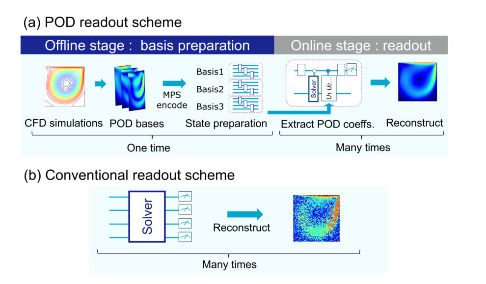
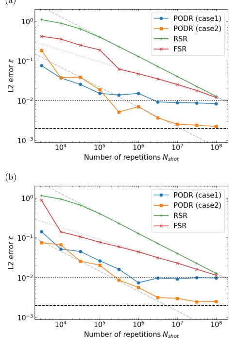

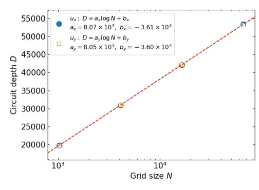
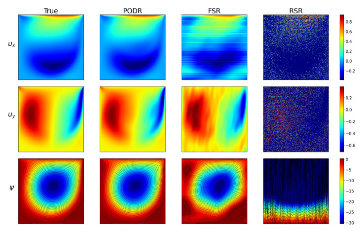
← Index · ← Previous · Next →
Authors: Fayuan Zhang, Huaxun Li, Xingkai Cheng, Yibo Fan, Yifan Yin, Yifan Gao, Zhanfeng Liu, Shengtao Cui, Zhouyi Yin, Yue Zhao, Junhao Lin, Zhengtai Liu, Mao Ye, Yaobo Huang, Shan Qiao, Wu Xie, Ping Miao, Hao Wu, Junwei Liu, Guanghan Cao, Chaoyu Chen
Type: both · Category: strongly correlated electrons · PDF: https://arxiv.org/pdf/2605.28701v1
Analysis basis: full PDF text, analyzed in chunks
Topic relevance: Kondo & dissipative impurity 2/5
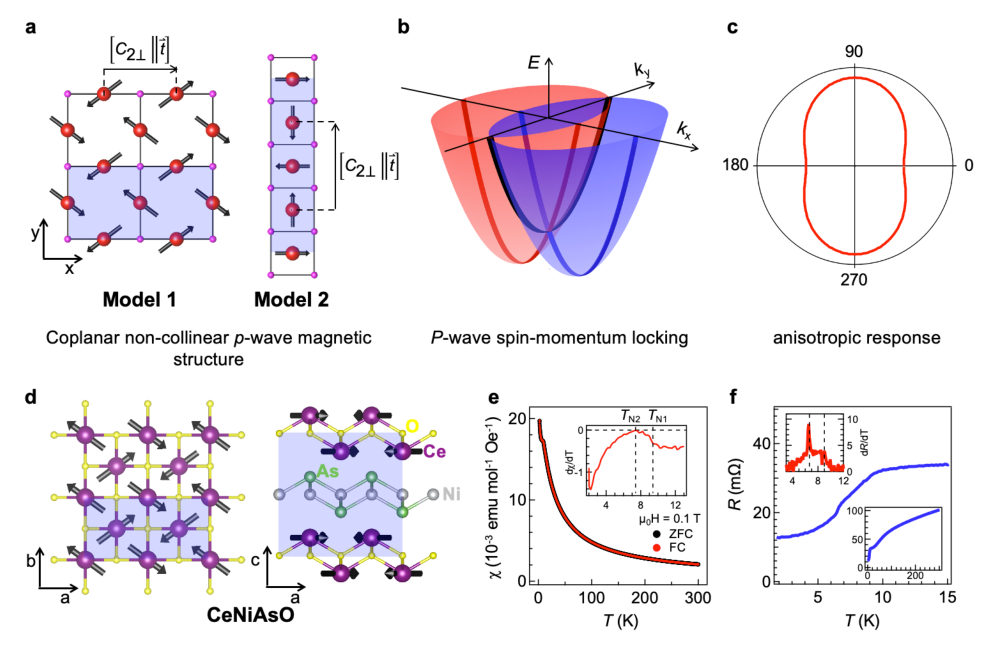
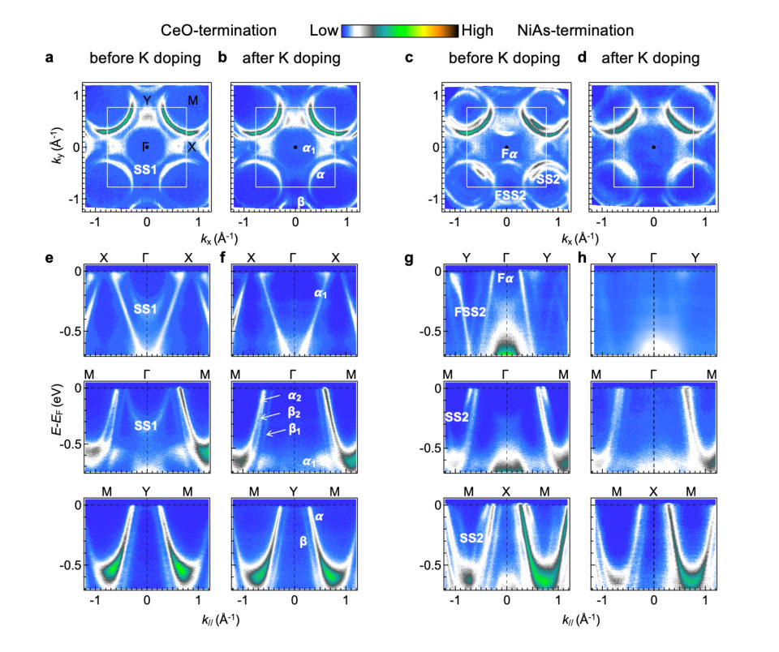
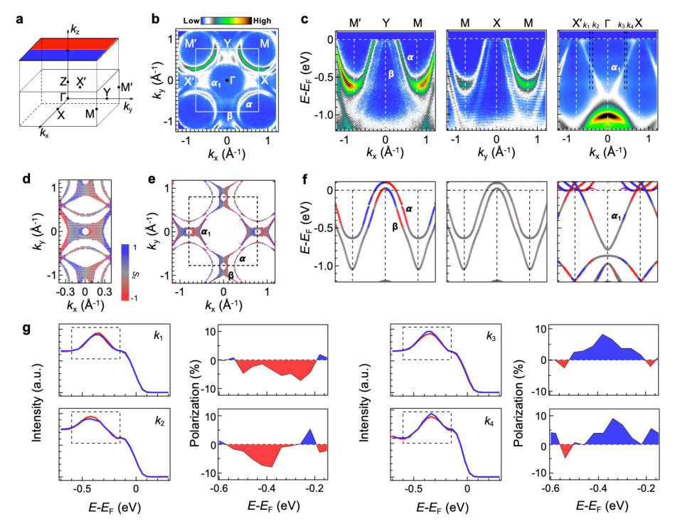
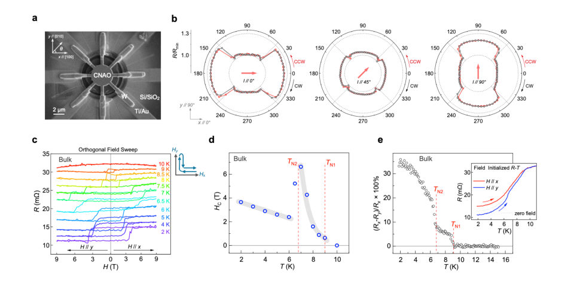
Summary. This paper provides the first experimental evidence of p-wave spin symmetry in the odd-parity magnet CeNiAsO. By using potassium deposition to reveal intrinsic bulk bands, the authors demonstrate that magnetic domains can be manipulated to switch resistance anisotropy, suggesting high potential for antiferromagnetic spintronic memory devices.
Why it may be interesting. not directly relevant
Main problem. The experimental verification of intrinsic p-wave spin symmetry in odd-parity magnets and the connection between this symmetry and observed anisotropic transport properties.
Main result. The authors experimentally demonstrate p-wave spin symmetry in CeNiAsO using spin-resolved ARPES and show that magnetic domain selection can switch the material between high- and low-resistance states.
Method. The study combines spin-resolved ARPES, STM, and transport measurements on single crystals and FIB-fabricated devices, supported by first-principles DFT calculations and in situ potassium deposition to remove surface states.
Model / system. The system is CeNiAsO, an antiferromagnetic Kondo metal with a layered tetragonal structure and p-wave magnetic order characterized by a non-relativistic spin group symmetry C4z^t.
Key observables. Spin polarization (asymmetry in EDCs), resistance anisotropy, magnetoresistance ratio, and Fermi surface topology.
Important parameters / regimes. Magnetic transition temperatures (TN1 approx 7.4 K, TN2 approx 9.4 K), magnetic field up to 9 T, and temperature regimes down to 2 K.
Assumptions / limitations. The study assumes that potassium deposition effectively compensates for polar surface states to reveal the intrinsic bulk band structure.
Figures summary. Figures show XRD and EDS for composition, STM for surface termination identification, ARPES for Fermi surface and band spectra, and transport data showing resistance anisotropy and domain switching.
Paper structure. The paper introduces the importance of odd-parity magnets, details the structural and magnetic characterization of CeNiAsO, presents ARPES results showing p-wave symmetry after surface modification, demonstrates resistance anisotropy switching via magnetic field, and concludes with the implications for spintronics and superconductivity.
Odd-parity magnets, complementary to altermagnets, exhibit unique properties such as high efficiency in charge-spin conversion and compatibility with conventional superconductivity, of critical importance in the pursuit of energy-efficient spintronics and topological superconductors for quantum computation. For even-parity d-wave and g-wave altermagnets, the magnetic structure, spin-split band structure and physical properties are currently under intensive study. On the contrary, while hundreds of odd-parity magnets and the promising properties have been predicted in theory, experimental studies are scarce. Specifically, the magnetic structure and transport properties of candidates NiI2 and Ga3Ru4Al12 have been reported, yet the characteristic band structure and particularly the odd-parity spin symmetry remain elusive. Here we demonstrate experimentally the deterministic p-wave spin symmetry and resistance anisotropy switching for the prototype odd-parity magnet, CeNiAsO. Angle-resolved photoemission spectroscopy (ARPES) reveals two cleaved terminations with distinct surface band structure. By compensating the polar surface, we achieve intrinsic bulk band structure, for which the spin splitting can be well described by the p-wave magnetic structure through first-principles calculation. The bulk spin polarization measured by spin-resolved ARPES exhibits symmetry with only one degenerate plane, fingerprint of p-wave magnetism. We further demonstrate giant resistance anisotropy and switching between high-resistance and low-resistance states through modest field-induced domain selection, highlighting its potential for antiferromagnetic spin memory devices. The structural similarity between CeNiAsO and 1111-type Fe-based superconductors stimulates further exploration on the interplay between p-wave magnetism, superconductivity and band topology.
Authors: Kota Ichiki, Xinchi Huang, Gekko Budiutama, Masari Watanabe, Yoshifumi Kawada, Ryunosuke Terasawa, Hirofumi Nishi, Takayuki Suzuki, Nagai Ryutaro, Yu-ichiro Matsushita
Type: theory · Category: quantum information and computing · PDF: https://arxiv.org/pdf/2605.27915v1
Analysis basis: full PDF text, analyzed in chunks
Topic relevance: quantum measurements 2/5




Summary. This paper proposes a problem-specific readout method for quantum PDE solvers that uses classical precomputation to create an efficient basis for reconstruction. By projecting quantum states onto a reduced POD basis, the method overcomes the scaling bottlenecks of standard readout techniques in fluid dynamics simulations.
Why it may be interesting. not directly relevant
Main problem. The readout and reconstruction of classical solutions from quantum states in PDE solvers is a significant bottleneck, as conventional methods like Real-Space Readout scale poorly with grid size.
Main result. The proposed PODR method significantly reduces the number of measurements and computational resources in the online stage, achieving superior shot efficiency and reconstruction fidelity compared to RSR and FSR.
Method. A two-stage approach (offline/online) using Proper Orthogonal Decomposition (POD) to precompute a reduced basis from classical snapshots, which is then encoded into quantum circuits using Matrix Product States (MPS) and measured via the Hadamard test.
Model / system. The method is applied to Computational Fluid Dynamics (CFD) benchmark problems, specifically 2D steady lid-driven cavity flow and 2D Kármán vortex street.
Key observables. Velocity fields (u_x, u_y), stream functions, and projection/encoding error estimators.
Important parameters / regimes. Grid size (N), number of POD bases (n_b), bond dimension (chi), Reynolds number (Re), and target error tolerance (epsilon).
Assumptions / limitations. The solution state is well-represented by the classical snapshot ensemble, and the offline stage is performed only once for a specific problem class.
Figures summary. Figure 1 shows the PODR workflow and comparison to RSR; Figure 2 plots readout error vs. shots; Figure 3 shows circuit depth scaling; Figures 4-5 visualize reconstructed velocity fields; Figures 8-9 validate error estimators; Figure 11 compares shot efficiency across methods.
Paper structure. The paper introduces the readout bottleneck, details the PODR offline/online workflow, provides a mathematical error decomposition, presents complexity analysis, validates the method using CFD benchmarks, and concludes with error estimator validation.
Quantum computing is a promising technology for accelerating partial differential equation solvers applied to large-scale real-world problems. However, reconstructing a classical representation of the solution from the quantum state remains a significant bottleneck. We propose a problem-specific method, called proper orthogonal decomposition-based readout (PODR), to improve readout efficiency by precomputing characteristic features of the solution. The present method consists of an offline stage and an online stage. In the offline stage, a set of basis functions representing the dominant features of the target problem is constructed from representative solution data using classical computations. In the online stage, the quantum state is projected onto this reduced basis, and only the minimal set of weight coefficients is extracted to reconstruct the solution. Since the offline stage is carried out only once, the proposed PODR method is especially advantageous for simulations with varying parameters, which are common in computational fluid dynamics (CFD). Futhermore, we apply the proposed method to benchmark problems in fluid dynamics and demonstrate that PODR significantly reduces both the number of measurements and the computational resources in the online stage compared with conventional readout methods.
Authors: Jan Střeleček, Jakub Novotný, Pavel Cejnar
Type: theory · Category: other · PDF: https://arxiv.org/pdf/2605.28351v1
Analysis basis: full PDF text, analyzed in chunks
Topic relevance: spintronics-quantum-optics interface 2/5
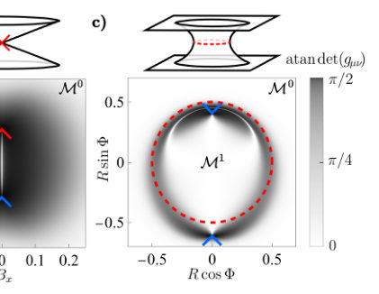
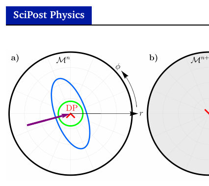
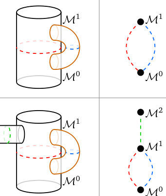
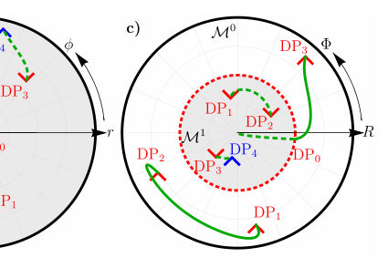
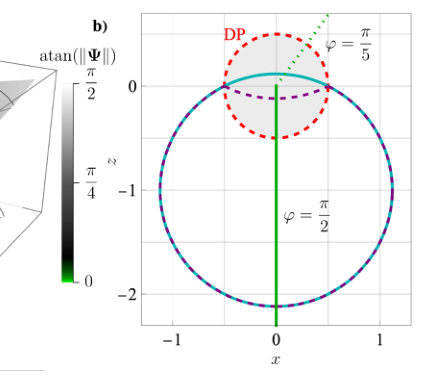
Summary. This paper introduces a new geometric framework called the Connected State Manifold to treat energy level crossings as bridges rather than boundaries. By regularizing the metric at these points, the authors show that one can find shorter, more stable paths (geodesics) and compute Berry phases even when passing directly through degeneracies.
Why it may be interesting. This is highly relevant for researchers in quantum control and adiabatic computing, as it provides a way to navigate through degeneracies and compute geometric phases for paths that traverse diabolic points.
Main problem. The divergence of the Provost-Vallee metric and numerical instabilities at diabolic points (DPs) prevent a continuous geometric description of eigenstate manifolds.
Main result. The authors develop a 'Connected State Manifold' (CSM) formalism where DPs act as bridges to glue adjacent manifolds, regularizing the metric and enabling stable computation of geodesics and Berry phases.
Method. The study uses coordinate transformations (stretched coordinates) to regularize singularities, analytic continuation across DP horizons, and second-order perturbation theory to analyze multi-level systems.
Model / system. The framework applies to N-level parametric Hermitian Hamiltonians, specifically focusing on 3-level systems with effective PT-symmetry, such as those inspired by NV centers in diamond.
Key observables. Quantum Geometric Tensor (QGT), Provost-Vallee metric, Berry phase, and geodesics.
Important parameters / regimes. Diabolic points (DPs), spectral gap, radial and angular coordinates (r, phi), and the DP horizon.
Assumptions / limitations. The analysis assumes DPs have codimension 2, focuses on systems with effective PT-symmetry (antiunitary symmetry), and assumes no three levels cross at the same point.
Figures summary. Figure 1 shows 3D spectra and metric divergence/regularization; Figure 2 illustrates coordinate transformations and path continuation; Figure 4 displays the topological genus and graph representation of CSMs; Figure 9 compares unstable single-manifold geodesics with stable CSM geodesics.
Paper structure. The paper introduces the problem of metric singularities at DPs, proposes the CSM formalism via coordinate regularization, analyzes the local geometry of multi-level systems using perturbation theory, characterizes the topology and nodal lines of the CSM, and demonstrates the stability and efficiency of geodesics within this new framework.
Parametric Hamiltonians often exhibit point-like spectral degeneracies (diabolic points, or conical intersections), which can lead to singularities in the Provost-Vallee metric of eigenstate manifolds. We regularise the metric by a coordinate transformation and develop a formalism in which diabolic points act as bridges between adjacent eigenstate manifolds, glueing them into a single connected state manifold. We characterise the topology of this structure and refine the rules for nodal lines governing the Berry phase. The connected state manifold restores the numerical stability near diabolic points, enlarges the class of geodesics allowing for new geodesic shortcuts, and provides a new mechanism for Berry phase computation, even along paths traversing diabolic points.
Authors: Yewei Yuan, Michele Minervini, Mark M. Wilde, Nana Liu
Type: theory · Category: quantum information and computing · PDF: https://arxiv.org/pdf/2605.27942v1
Analysis basis: full PDF text, analyzed in chunks
Topic relevance: quantum measurements 2/5
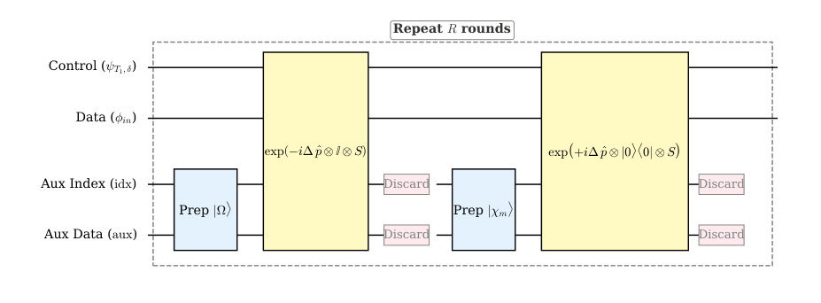
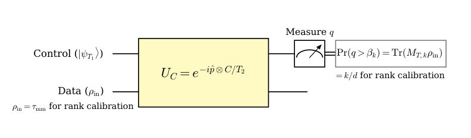
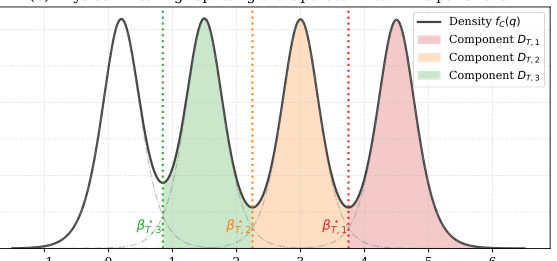
Summary. This paper proposes a new way to perform Quantum PCA by treating it as a measurement-based scoring task rather than an eigenvector recovery task. By using a smooth Fermi-Dirac filter, the authors bypass the need for expensive iterative computations and enable efficient, training-free processing of quantum data for tasks like anomaly detection.
Why it may be interesting. not directly relevant
Main problem. Traditional Quantum Principal Component Analysis (qPCA) is computationally expensive due to the need for explicit eigenvector recovery and is difficult to implement for quantum-native data that requires centering. The authors aim to develop a framework that performs PCA-like tasks (scoring and filtering) without needing to reconstruct individual eigenvectors.
Main result. The authors introduce a measurement-based 'soft PCA' framework using an entropy-regularized Fermi-Dirac filter that achieves dimension-independent sample complexity for scoring tasks. This framework allows for training-free calibration, where a single fixed quantum circuit can be used to identify optimal thresholds for various rank budgets or variance levels.
Method. The method replaces hard rank-k projectors with a smooth Fermi-Dirac filter derived from an entropy-regularized variational formulation. It utilizes a continuous-variable quantum measurement protocol involving Hamiltonian simulation of the covariance operator and a controlled thermal measurement using a non-Gaussian wavepacket.
Model / system. The system involves quantum feature states representing centered covariance operators. The mathematical model uses a controlled Hamiltonian evolution $U_C = e^{-i\hat{p} \otimes C/T_2}$, where $\hat{p}$ is the momentum quadrature of a control qumode and $C$ is the covariance operator.
Key observables. Principal-subspace scores, spectral-energy profiles, postselected filtered states, and the position quadrature $q$ of the control qumode.
Important parameters / regimes. Temperature ($T$) controlling spectral smoothness, rank budget ($k$), retained variance, chemical potential ($\mu$), and the accuracy parameter ($\eta$).
Assumptions / limitations. Assumes the existence of a centered covariance operator represented by quantum feature states and requires a non-zero eigengap for the zero-temperature limit to recover hard PCA.
Figures summary. Figure 1 provides a schematic of the implementation of the Hamiltonian evolution using a two-substep product formula involving empirical and mean-subtraction steps.
Paper structure. The paper identifies limitations of traditional PCA, proposes an entropy-regularized soft PCA framework, derives the Fermi-Dirac filter, details the quantum implementation via thermal measurement, provides a calibration protocol for various ranks, and performs error and complexity analysis.
Principal component analysis (PCA) is traditionally implemented through a covariance or kernel matrix, leading-eigenvector extraction, and hard rank-$k$ projection. These steps can be computationally costly in high-dimensional and quantum-data settings, sensitive to small eigengaps, and unnecessary when downstream tasks only require principal-subspace scores. Such score-based objectives are important in applications such as anomaly detection, spectral-energy profiling, and other postselection tasks. To address these needs, we introduce a measurement-based soft PCA framework replacing the hard top-$k$ projector with an entropy-regularized Fermi--Dirac filter. This filter is the unique optimizer of an entropy-regularized variational formulation of PCA and converges to the classical PCA projector in the zero-temperature limit. This filter has a direct interpretation as a quantum measurement, which naturally suggests a quantum approach. For centered covariance operators represented by quantum feature states, a single fixed circuit, together with threshold calibration, accesses all optimal filters for different rank budgets or retained-variance levels without rank-dependent circuit updates or eigenvector recovery. For new inputs, the same calibrated quantum circuit yields soft principal subspace scores, spectral energy profiles, and postselected filtered states. The required centering of both training and test data is performed coherently inside the quantum protocol, which is particularly important for quantum data where no classical feature vectors or centered Gram matrix are directly available. By reframing PCA as a calibrated measurement task, this framework bypasses the need for iterative eigenvector extraction and achieves a dimension-independent sample complexity $O(η^{-2})$ for normalized fractional-rank or retained variance scoring at additive accuracy $η$.
Authors: Xie Chen, Shang Liu, Da-chuan Lu, Nathanan Tantivasadakarn
Type: theory · Category: strongly correlated electrons · PDF: https://arxiv.org/pdf/2605.27672v1
Analysis basis: full PDF text, analyzed in chunks
Topic relevance: entanglement & information structure 2/5
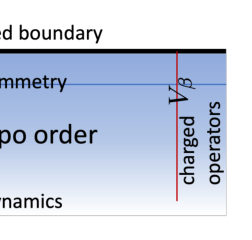
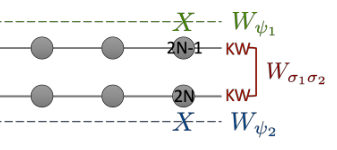
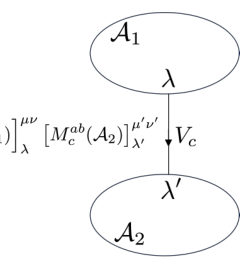
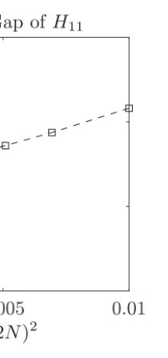
Summary. This paper explores how spontaneous symmetry breaking works when the symmetry cannot be inverted, such as in certain fusion categories. It demonstrates that these transitions can be dual to well-known deconfined quantum critical points, providing a new way to study phase transitions beyond the Landau paradigm.
Why it may be interesting. not directly relevant
Main problem. The paper investigates the nature of spontaneous symmetry breaking (SSB) when the symmetry involved is non-invertible, specifically looking for differences between these phases and conventional invertible symmetry-breaking phases.
Main result. The authors establish that non-invertible SSB phases can still be characterized by long-range correlations of local order parameters and prove a duality between certain non-invertible symmetry-breaking transitions and deconfined quantum critical points (DQCP) of invertible symmetries.
Method. The study utilizes the Symmetry Topological Field Theory (SymTFT) formalism, anyon condensation, and generalized gauging techniques, supported by exact diagonalization of 1D qubit lattice models.
Model / system. The primary models are 1+1D gapped phases with Rep(H8) symmetry, realized via 1D qubit lattice models (coupled chains) and a 'sandwich' construction involving a 2+1D topological bulk.
Key observables. Local order parameters, ground-state degeneracy, correlation functions, and topological spin.
Important parameters / regimes. The non-invertible Rep(H8) symmetry, the 3-cocycle parameter gamma for the dual D8 symmetry, and the thermodynamic limit of the 1D lattice size.
Assumptions / limitations. The study focuses on 1+1D systems and considers only untwisted local order parameters.
Figures summary. The notes do not provide specific descriptions of figures, though they mention the use of numerical verification for energy gaps and ground-state degeneracy.
Paper structure. The paper introduces the problem of non-invertible SSB, develops the SymTFT and anyon condensation framework, presents concrete 1D lattice models and their Hamiltonian constructions, establishes the duality to DQCP via gauging, and generalizes the results to group-theoretical Hopf algebras.
Spontaneous symmetry breaking is a well-understood mechanism for generating distinct phases of matter. Recently, the notion of symmetry has been broadened to include operations without inverses, leading to the concept of non-invertible symmetries. How do symmetry-breaking phases associated with non-invertible symmetries differ from those arising from conventional invertible symmetries? We address this question using concrete lattice models of the gapped phases with non-invertible Rep($H_8$) symmetry as an example. We find that, despite the symmetry being non-invertible, the symmetry-breaking phases can still be characterized by the long-range correlation of local order parameters, which obey a more general algebraic structure than in the invertible setting. Furthermore, via generalized gauging, certain non-invertible symmetry-breaking transitions can be mapped to deconfined quantum critical points of invertible symmetries, and vice versa. We establish precise conditions under which this duality holds and illustrate them with several families of examples, providing a systematic route to studying beyond-Landau phase transitions.
Authors: Farrokh Labib, Vincent Russo
Type: theory · Category: quantum information and computing · PDF: https://arxiv.org/pdf/2605.28586v1
Analysis basis: full PDF text, analyzed in chunks
Topic relevance: entanglement & information structure 2/5
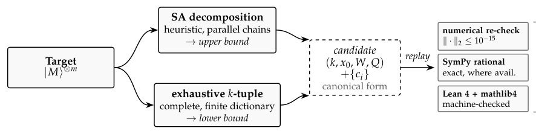
Summary. This paper provides tighter bounds on the stabilizer rank of various magic-state orbits for both qubits and qutrits, which is crucial for understanding the complexity of simulating quantum circuits. It introduces a new software library and uses formal verification to ensure the accuracy of the discovered algebraic decompositions.
Why it may be interesting. not directly relevant
Main problem. Determining the stabilizer rank and the per-copy asymptotic stabilizer-rank exponent for different Clifford orbits of magic states in qubit and qutrit systems.
Main result. Established new, lower upper bounds for several qutrit magic-state orbits (Strange, Norrell, and Hadamard-eigenstate) and provided a closed-form qubit T-type decomposition. The authors also proved the first nontrivial asymptotic lower bounds for the Hadamard-eigenstate and Norrell orbits.
Method. The authors use simulated-annealing searches via the 'stabrank' library to find stabilizer decompositions, apply a subset-sum argument for lower bounds, and utilize Lean 4 for formal machine-checked verification of the identities.
Model / system. The study focuses on the Clifford + magic-state model of quantum computation, specifically analyzing the stabilizer rank of tensor powers of magic states in qubit (p=2) and qutrit (p=3) systems.
Key observables. Stabilizer rank (chi) and the per-copy asymptotic stabilizer-rank exponent (gamma).
Important parameters / regimes. Number of copies (m), dimension of the system (p=2 or p=3), and the specific Clifford orbits (Strange, Norrell, Hadamard-eigenstate, and T-state).
Assumptions / limitations. The results assume the validity of the Clifford + magic-state model and rely on the algebraic structure of the Clifford group in prime dimensions.
Figures summary. Figure 1 illustrates the 'stabrank' decomposition pipeline, showing the flow from simulated annealing to numerical, symbolic, and formal verification.
Paper structure. The paper introduces the problem of orbit-dependent stabilizer ranks, presents new upper bounds for qutrit orbits through explicit decompositions, establishes asymptotic lower bounds using subset-sum techniques, provides a new qubit T-type decomposition, and concludes with the introduction of the 'stabrank' software and formal verification results.
Distinct Clifford orbits of magic states can exhibit different stabilizer ranks at small tensor powers. We establish this for qutrits, where the single-qutrit Clifford group has four inequivalent orbits of magic states: Strange, Norrell, Hadamard-eigenstate, and the qutrit T-state, but a nontrivial upper bound on the asymptotic exponent had been pinned down for only the qutrit T-state. For the other three orbits we give explicit stabilizer decompositions, yielding upper bounds on the per-copy asymptotic stabilizer-rank exponent: $γ_S \le \log_3(2)/2 \approx 0.316$ for the Strange state, and $γ_{H_3}, γ_N \le \log_3(4)/3 \approx 0.421$ for the Hadamard-eigenstate and Norrell orbits, all strictly below the prior $γ_{T_3} \le 1/2$ baseline. We also prove the first nontrivial $Ω(m / \log m)$ asymptotic lower bounds for the Hadamard-eigenstate and Norrell orbits, and exhibit two-qutrit Clifford circuits that convert two copies of these states into an injectable phase state with constant success probability, enabling constant-overhead injection of one non-Clifford diagonal gate per orbit. In the case of qubits, we give a closed-form decomposition of the qubit T-type orbit at four copies matching the existing $γ_T \le \log_2(3)/4 \approx 0.396$ exponent via a direct algebraic identity rather than an entangled cat-state construction. An open-source library stabrank accompanies the paper, with Lean 4 proof formalizations of all the decompositions.
Authors: Ori Grossman, Yotam Kadish, Snir Gazit, Amit Ben-Kish, Roee Ozeri, Yotam Shapira
Type: theory · Category: quantum information and computing · PDF: https://arxiv.org/pdf/2605.28536v1
Analysis basis: full PDF text, analyzed in chunks
Topic relevance: methods for driven-dissipative 2/5
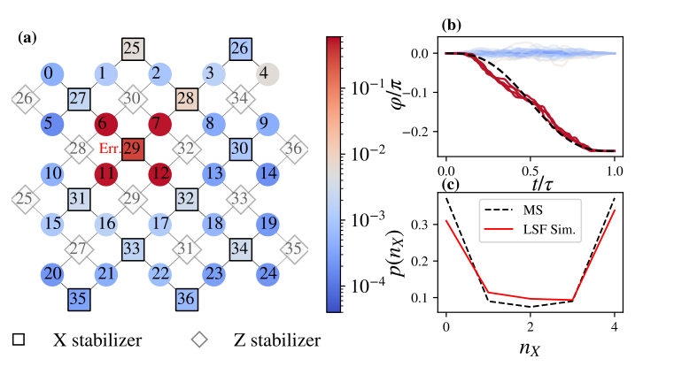
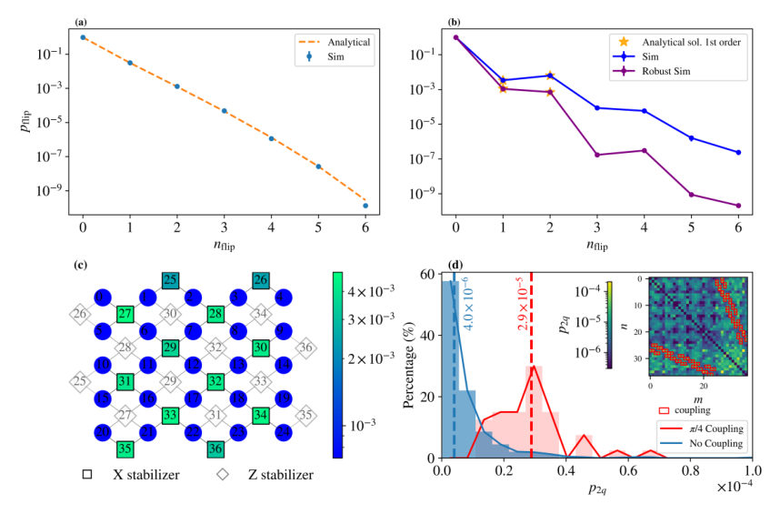
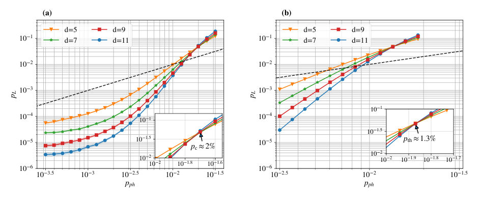
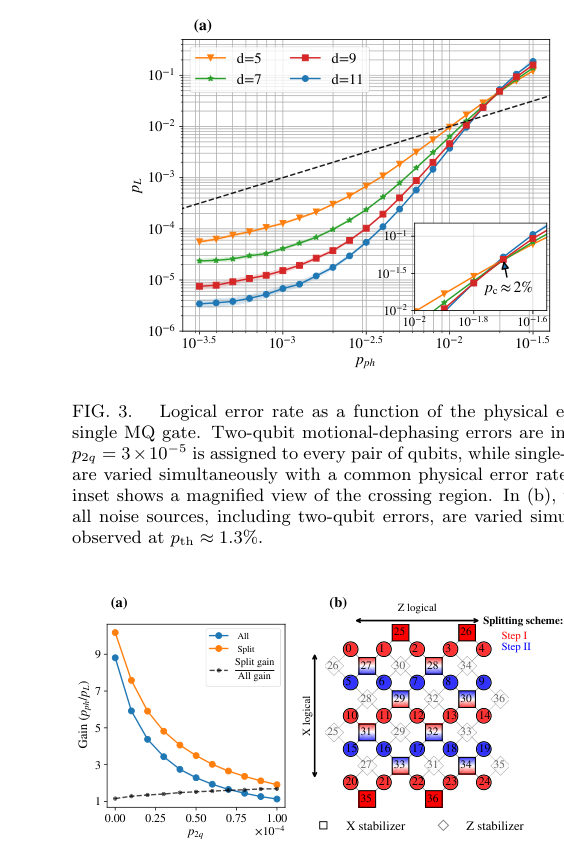
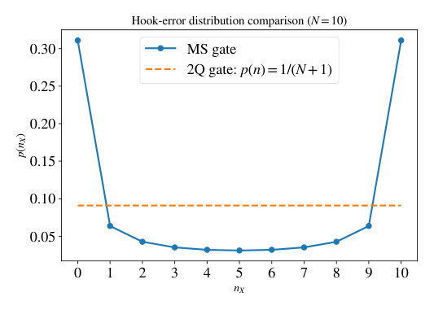
Summary. This paper develops a detailed noise model for multi-qubit gates in trapped-ion systems to determine their compatibility with scalable quantum error correction. It finds that despite the all-to-all connectivity, errors remain sufficiently localized to allow for a finite QEC threshold in the rotated surface code.
Why it may be interesting. It provides a rigorous bridge between device-level physics (motional heating, photon scattering) and high-level QEC performance, which is crucial for designing scalable ion-trap architectures.
Main problem. Investigating whether multi-qubit (MQ) gate operations in trapped-ion architectures are compatible with scalable quantum error correction (QEC) by analyzing noise propagation and error rates.
Main result. The study demonstrates that MQ-gate-induced errors are compatible with a finite QEC threshold for the rotated surface code, as error propagation is largely localized to coupled qubits and certain error types are suppressed.
Method. The authors use a Lindblad master equation formalism and Magnus expansion to derive a microscopic noise model, followed by quantum Monte-Carlo and Stim-based simulations of the rotated surface code.
Model / system. A trapped-ion quantum computing platform with all-to-all connectivity, utilizing generalized multi-qubit Ising gates implemented via engineered spin-motion interactions in the Lamb-Dicke regime.
Key observables. Single-qubit and two-qubit error rates, bit-flip probabilities, entangling phase trajectories, and logical error rates as a function of code distance.
Important parameters / regimes. Gate duration (tau ~ 450 us), heating rate (50-100 Hz), dephasing rate (10-100 Hz), and code distances (d=5 to d=17).
Assumptions / limitations. Assumes the Lamb-Dicke regime, neglects higher-order multi-qubit errors beyond two-qubit, and assumes Pauli twirling can treat coherent errors as stochastic Pauli channels.
Figures summary. Heatmaps of bit-flip probabilities, trajectories of entangling phases, comparison of analytical vs. numerical heating-induced errors, and performance plots of the surface code under different error models.
Paper structure. The paper introduces the problem of MQ gate noise, develops a microscopic noise model using Lindblad dynamics, analyzes error propagation and locality, evaluates QEC performance using surface code simulations, and provides analytical derivations in the appendix.
We construct a detailed microscopic noise model for multi-qubit (MQ) gate operations in the context of trapped ion architecture with all-to-all connectivity. We find that phonon heating and motional dephasing are well captured by effective single- and two-qubit error channels that can, in principle, act between arbitrary pairs of qubits. Nevertheless, the median magnitude of two-qubit errors between uncoupled qubits is substantially smaller than that of errors between gate-coupled qubits. Errors associated with photon scattering are shown to solely propagate to qubits participating in gate operations. Lastly, we combine all noise sources, assigned with experimentally relevant parameters, and explore the scalability of a quantum error correction (QEC) scheme based on the rotated surface code, as a function of error rates and code size. Our analysis bridges device-level physics and QEC performance for MQ gates in trapped-ion architectures.
Authors: Francesco Ancilotto
Type: theory · Category: quantum gases · PDF: https://arxiv.org/pdf/2605.28469v1
Analysis basis: full PDF text, analyzed in chunks
Topic relevance: analog quantum simulation 2/5
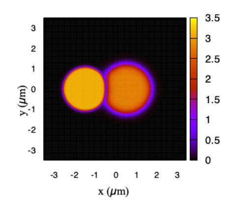
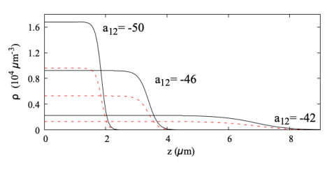
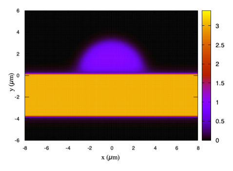
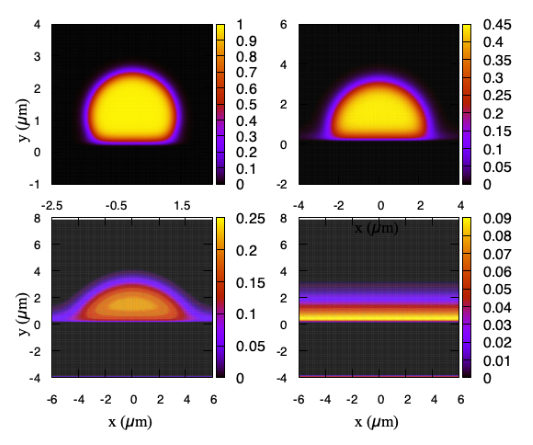
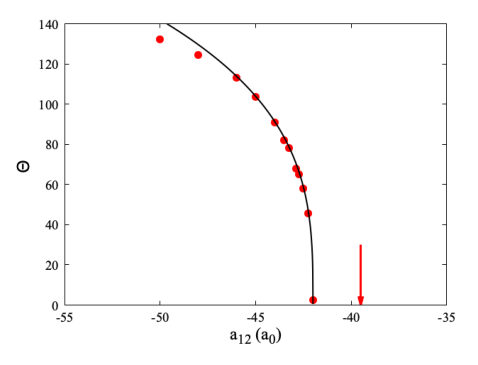
Summary. This paper demonstrates that tuning interspecies interactions in a three-component Bose mixture can drive a wetting transition, leading to the formation of self-bound, shell-shaped quantum droplets. These structures consist of a core-shell geometry where the outer component can host quantized vortices. This approach offers a new way to engineer and study the topology and capillarity of quantum fluids.
Why it may be interesting. It provides a novel mechanism (wetting) to create complex, self-bound topological structures (shell-shaped droplets) in ultracold gases, offering a platform to study superfluidity in curved, multiply connected geometries.
Main problem. Investigating how wetting phenomena between self-bound quantum fluids can be used to engineer free-standing, shell-shaped quantum droplets.
Main result. The study identifies a transition from partial to complete wetting in a three-component Bose mixture, where the (1,2) liquid wraps around a (2,3) core to form a self-bound core-shell droplet that can sustain quantized vortices.
Method. A density-functional approach using the Mean-Field + Lee-Huang-Yang (MF+LHY) framework, solved via 3D imaginary-time evolution on a Cartesian grid.
Model / system. A three-component Bose mixture of 23Na, 39K, and 41K atoms, modeled as two interacting binary quantum liquids where one acts as a substrate for the other.
Key observables. Surface tension, contact angle, density profiles (column density), and critical rotation frequency for quantized vortices.
Important parameters / regimes. The interspecies scattering length a12, which drives the wetting transition, and the critical value a12c = -42 a0.
Assumptions / limitations. Zero temperature, absence of three-body recombination, and the validity of the MF+LHY approximation.
Figures summary. Figure 1 shows a dimer structure in the non-wetting regime; Figure 2 shows density profiles; Figure 6 shows interfacial energy vs a12; Figure 7 shows 2D column density projections illustrating the shell structure.
Paper structure. The paper introduces the problem of droplet engineering, describes the MF+LHY theoretical framework, details the numerical implementation, analyzes the wetting transition and contact angle scaling, demonstrates the formation of core-shell structures, and explores vortex excitations in these geometries.
We investigate wetting phenomena between self-bound quantum fluids in a three-component Bose mixture of $^{23}$Na, $^{39}$K, and $^{41}$K atoms. Within a density-functional approach including mean-field interactions and Lee-Huang-Yang quantum-fluctuation corrections, we consider two binary quantum liquids, formed by components $(1,2)$ and $(2,3)$, and study the adsorption of the softer $(1,2)$ liquid on a stiffer $(2,3)$ substrate. By tuning the interspecies scattering length $a_{12}$, we show that the surface tension of the $(1,2)$ liquid can be strongly varied, driving a transition from partial wetting to complete wetting of the $(2,3)$ phase. The contact angle extracted from cylindrical-cap geometries decreases continuously with increasing $a_{12}$ and vanishes near a critical value $a_{12}^{c}= -42\,a_0$. In the complete-wetting regime, a finite amount of $(1,2)$ liquid wraps around a spherical $(2,3)$ droplet, producing a self-bound core-shell droplet without external confinement, whose component-1 density has a shell-like, hollow projection. We further show that such shell-shaped quantum droplets can sustain quantized vortical excitations. These results identify wetting as a route to engineering free-standing shell-shaped quantum liquids and suggest new possibilities for studying capillarity, topology, and superfluidity in multicomponent quantum droplets.
Papers from primary archives without highlighted authors or any topic match. Click to expand.
Authors: Kazumasa Ueno, Keita Kanno, Yasunori Lee
Type: theory · Category: quantum information and computing · PDF: https://arxiv.org/pdf/2605.28135v1
Analysis basis: full PDF text, analyzed in chunks
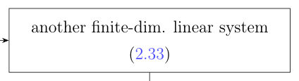
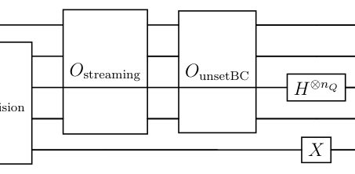
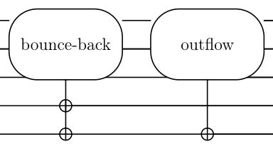
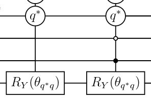
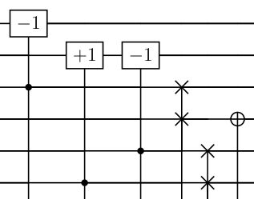
Summary. This paper presents a quantum algorithm for simulating 2D fluid flow around obstacles by linearizing the Lattice Boltzmann Method via Carleman linearization. It provides a detailed gate-level implementation of boundary conditions and demonstrates that the quantum computational cost scales logarithmically with spatial resolution.
Why it may be interesting. not directly relevant
Main problem. Developing a practical quantum-circuit implementation for Computational Fluid Dynamics (CFD) that incorporates non-periodic boundary conditions and obstacle geometries.
Main result. The authors demonstrated a gate-level implementation of the Carleman-linearized Lattice Boltzmann Method (LBM) showing logarithmic scaling of qubits and gates with respect to spatial resolution.
Method. The approach uses Carleman linearization to transform nonlinear fluid equations into a linear system, which is then solved using Quantum Singular Value Transformation (QSVT) and block-encoding.
Model / system. A two-dimensional fluid flow around a rectangular obstacle using the D2Q9 Lattice Boltzmann Model with the BGK collision operator.
Key observables. Fluid density, velocity field, and the effective condition number of the linear system.
Important parameters / regimes. Reynolds number (Re), Mach number (Ma), relaxation time (tau), number of lattice points (N), and Carleman truncation order (Nc).
Assumptions / limitations. The method assumes first-order Carleman linearization, weakly compressible flow, and a low Mach number regime.
Figures summary. Flowcharts of the linearization pipeline, illustrations of the D2Q9 velocity vectors, gate-level circuit architectures for block-encoding and QSVT, and velocity field snapshots from simulations.
Paper structure. The paper introduces the problem of quantum CFD, details the Carleman-LBM linearization, describes the quantum circuit construction (block-encoding and QSVT), presents resource estimation and scaling analysis, and concludes with validation against classical references.
Fluid simulations, especially at high Reynolds numbers, are computationally expensive on classical computers, making them promising application targets for quantum computing. Recent studies have combined the lattice Boltzmann method (LBM) with Carleman linearization to design quantum algorithms for computational fluid dynamics (CFD). However, practical quantum-circuit implementations of these algorithms that incorporate non-periodic boundary conditions have not been fully explored. In this work, we implement a quantum algorithm for two-dimensional linearized fluid flow around an obstacle, using block-encoding of the linear-system matrix and quantum singular value transformation (QSVT) to solve it. Inflow, outflow, and no-slip boundary conditions are formulated as sparse matrix operations and efficiently embedded into quantum circuits using index-value encoding. We demonstrate logarithmic scaling of the required numbers of qubits and gates with respect to the number of lattice points, suggesting the potential feasibility of quantum-computational fluid dynamics simulations.
Authors: James Bartusek, Eli Goldin
Type: theory · Category: quantum information and computing · PDF: https://arxiv.org/pdf/2605.27647v1
Analysis basis: full PDF text, analyzed in chunks
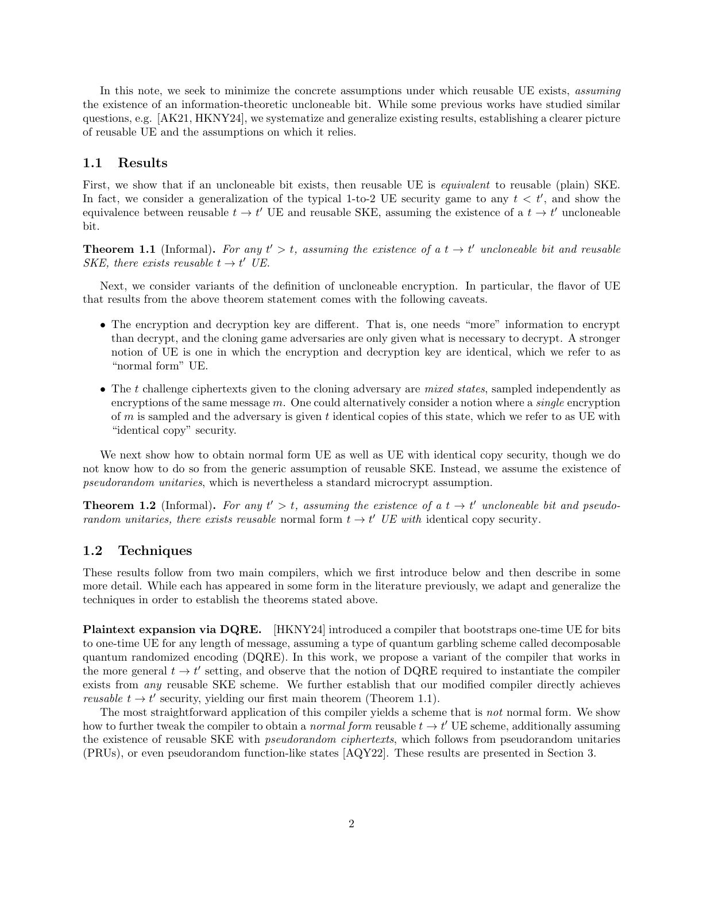
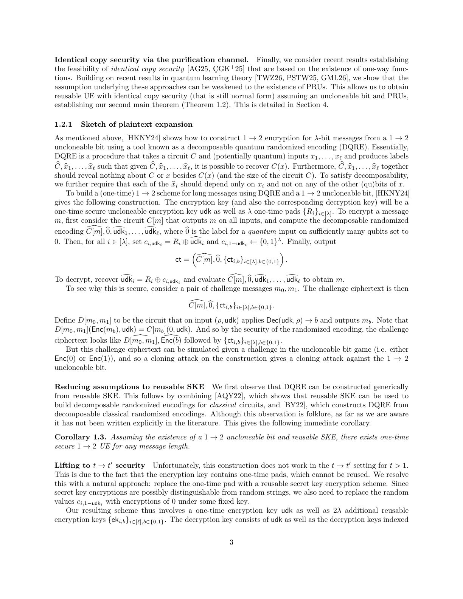
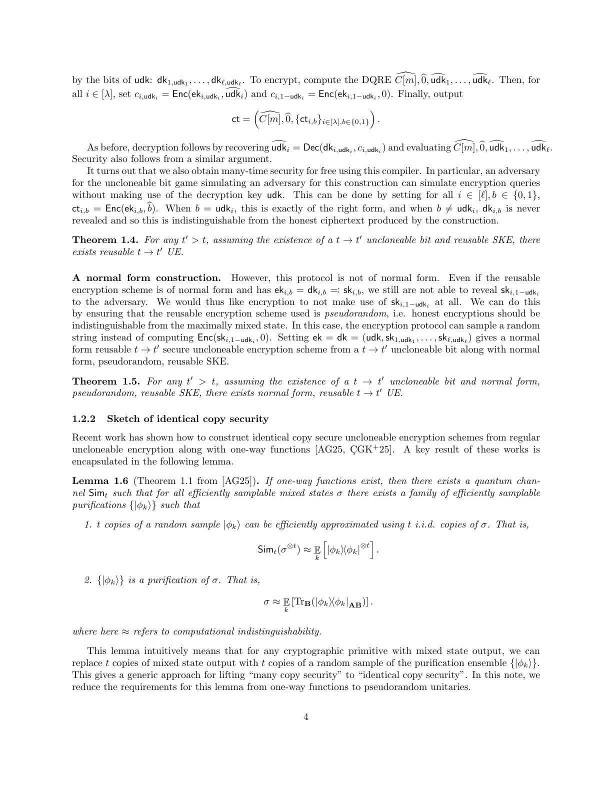
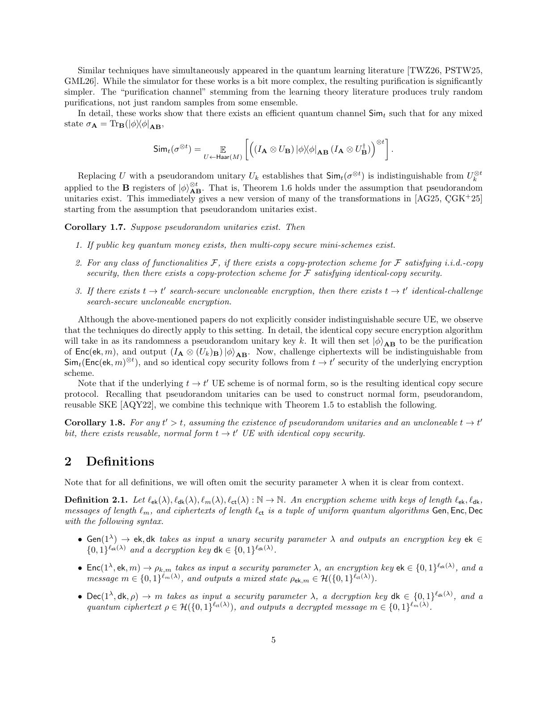
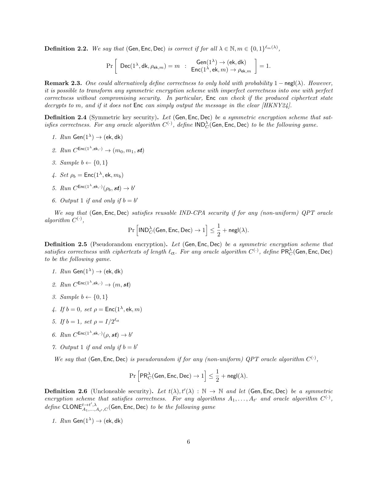
Summary. This paper demonstrates how to transform simple one-time uncloneable bits into more powerful, reusable uncloneable encryption schemes for long messages. It establishes that many-time uncloneable encryption is essentially as easy to achieve as many-time symmetric key encryption, provided an uncloneable bit exists.
Why it may be interesting. not directly relevant
Main problem. The paper aims to minimize the cryptographic assumptions required to achieve many-time (reusable) uncloneable encryption (UE) in the 'microcrypt' setting.
Main result. The authors prove that if a $t o t'$ uncloneable bit and reusable symmetric key encryption exist, then many-time $t o t'$ uncloneable encryption for arbitrary-length messages also exists.
Method. The authors use two main compilers: a plaintext expansion method using Decomposable Quantum Randomized Encoding (DQRE) and a purification channel method utilizing pseudorandom unitaries.
Model / system. The work operates in the 'microcrypt' framework, a model of unstructured quantum cryptography that remains secure even if P = NP, utilizing quantum channels, symmetric key encryption, and uncloneable bits.
Important parameters / regimes. Security parameters $\lambda$, number of copies $t$ and $t'$, and the distinction between one-time and many-time security regimes.
Assumptions / limitations. The existence of an information-theoretic $t o t'$ uncloneable bit, the existence of many-time secure symmetric key encryption, and the existence of pseudorandom unitaries (for normal form and identical copy security).
Paper structure. The paper introduces the problem of boosting uncloneable encryption, presents a construction for expanding bit-size via DQRE, provides a second construction for achieving normal form and identical copy security using pseudorandom unitaries, and concludes with implications for the microcrypt setting.
In this note, we consider the setting of uncloneable encryption satisfying uncloneable indistinguishability, a form of symmetric key encryption that prevents the cloning of ciphertexts in a very strong sense. Our goal is to minimize the assumptions under which (many-time secure) uncloneable encryption is known to exist, assuming the existence of an information-theoretic "uncloneable bit", i.e. a one-time secure uncloneable encryption scheme for one-bit messages. We observe that if a t -> t' uncloneable bit exists, then the following implications hold. 1. If many-time secure symmetric key encryption exists, then many-time secure t -> t' uncloneable encryption for arbitrary-length messages exists. Since many-time secure uncloneable encryption implies many-time secure symmetric key encryption, this result is tight. 2. If pseudorandom unitaries exist, then many-time secure t -> t' uncloneable encryption for arbitrary-length messages with identical copy security exists. These results together show that many-time secure uncloneable encryption may follow from concrete assumptions in "microcrypt", the world of unstructured quantum cryptography that plausibly exists even if P = NP.
Authors: Jianpeng Chen, Zirui Sheng, Cunxi Gong, Weitang Li
Type: theory · Category: quantum information and computing · PDF: https://arxiv.org/pdf/2605.28049v1
Analysis basis: full PDF text, analyzed in chunks
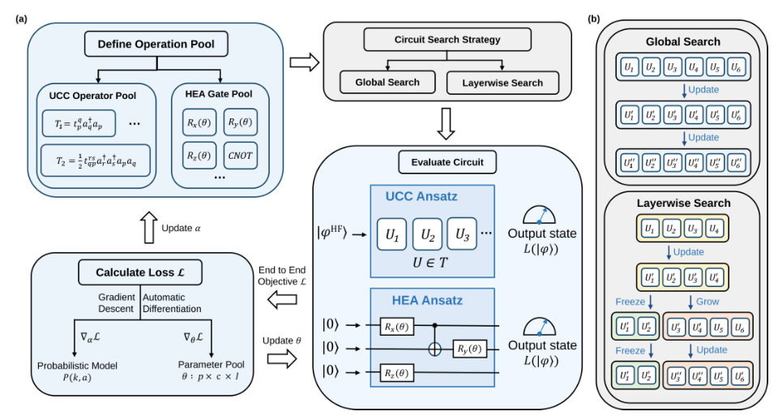
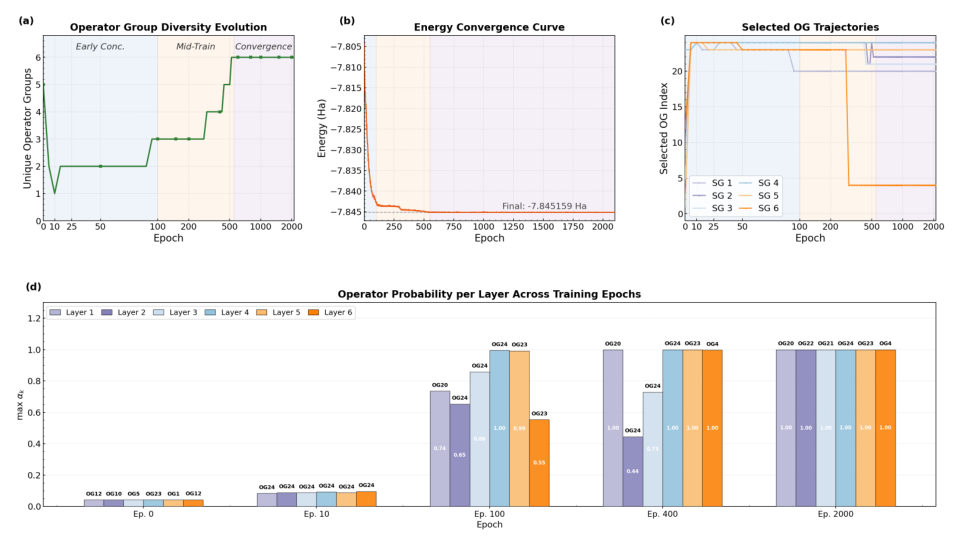
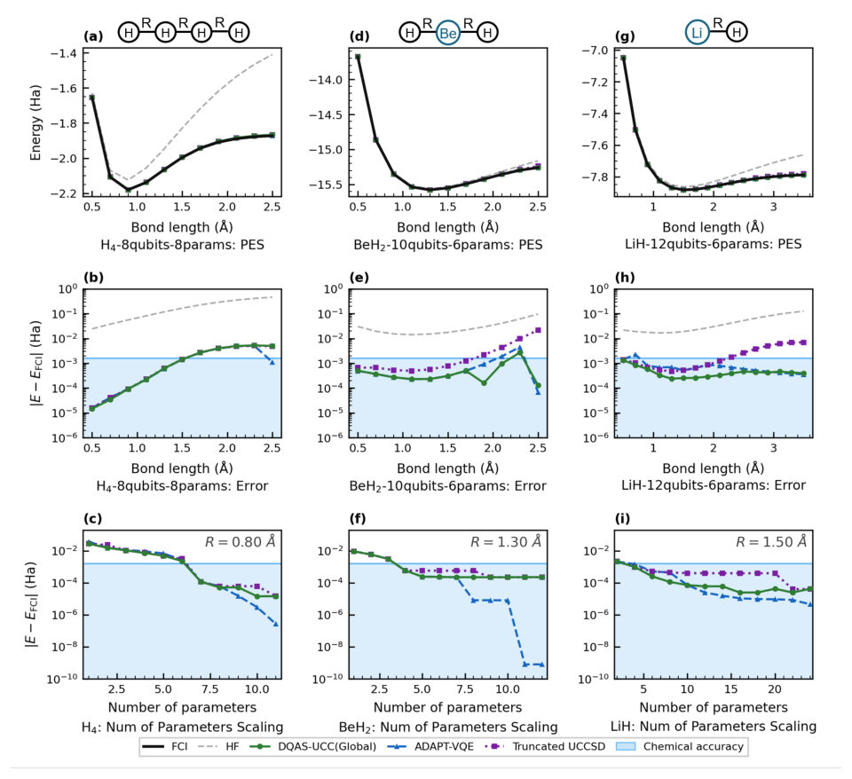
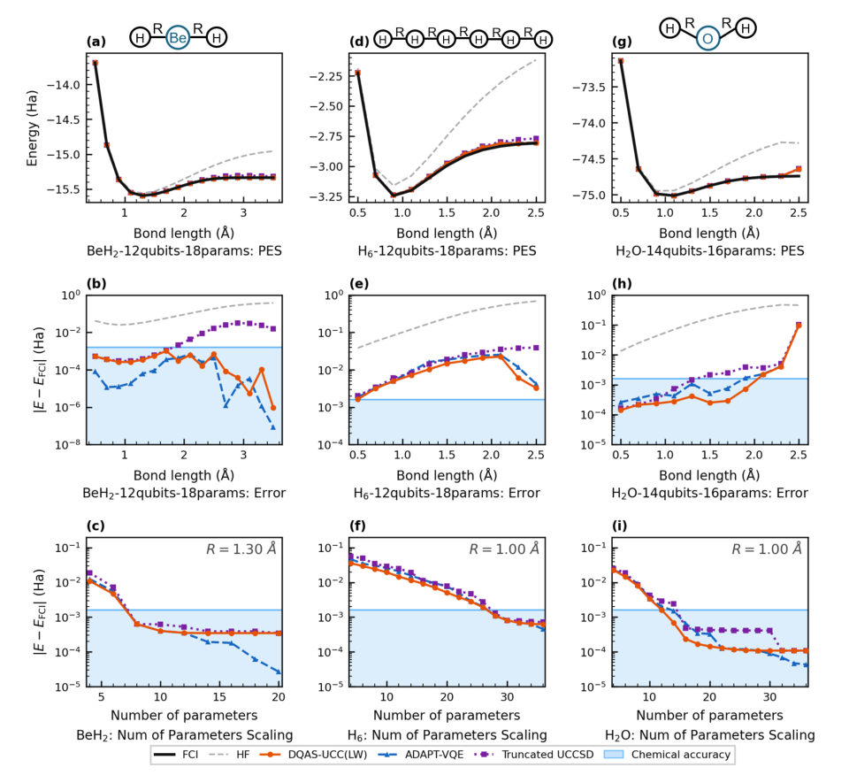
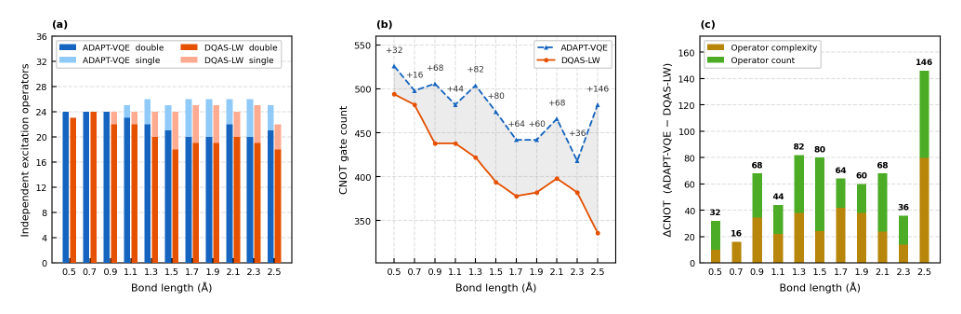
Summary. This paper presents a new method for automatically designing quantum chemistry circuits by treating operator selection as a continuous, differentiable optimization problem. By moving beyond greedy, sequential selection, the approach finds more efficient circuit architectures that are both more accurate and less computationally expensive for near-term quantum hardware.
Why it may be interesting. not directly relevant
Main problem. Designing efficient and accurate Unitary Coupled Cluster (UCC) quantum circuits for the Variational Quantum Eigensolver (VQE) is difficult due to the combinatorial complexity of selecting optimal operators and the high CNOT gate overhead of existing greedy methods like ADAPT-VQE.
Main result. The proposed Differentiable Quantum Architecture Search (DQAS) achieves up to 2.7-fold higher accuracy and a 13-17% reduction in CNOT gate counts compared to ADAPT-VQE in the compact circuit regime, with results generalizing to both UCCSD and QEB operator pools.
Method. The authors introduce a Differentiable Quantum Architecture Search (DQAS) framework that relaxes discrete operator selection into a continuous optimization problem using two strategies: a Global mode for simultaneous optimization and a Layerwise mode for incremental construction.
Model / system. The study focuses on molecular systems including BeH2, H4, LiH, H6, and H2O (8-14 qubits) using molecular Hamiltonians mapped to qubits via Jordan-Wigner transformation and evaluated at the Hartree-Fock level with the STO-3G basis set.
Key observables. Ground-state energy expectation values, potential energy surfaces (PES), CNOT gate counts, and energy error relative to Full Configuration Interaction (FCI) benchmarks.
Important parameters / regimes. The compact circuit regime (limited circuit depth), chemical accuracy threshold (1.6 mHa), and the comparison between UCCSD and QEB operator pools.
Assumptions / limitations. The method's advantage is most pronounced in the compact circuit regime and may face limitations due to gradient attenuation in much deeper circuits.
Figures summary. Figure 1 shows the DQAS workflow and search strategies; Figure 2 illustrates training trajectories and energy convergence for LiH; Figure 3 presents potential energy curves and error scaling for BeH2, H4, and LiH; Figure 6 demonstrates performance on the QEB pool for H2O.
Paper structure. The paper introduces the problem of circuit design, presents the DQAS framework (Global and Layerwise modes), details the optimization and implementation using TensorCircuit, provides benchmarking results against ADAPT-VQE across various molecules, and discusses generalizability and limitations.
Designing compact and accurate circuits for the variational quantum eigensolver (VQE) is a central challenge in near-term quantum chemistry. Existing adaptive methods such as ADAPT-VQE design circuits by iteratively selecting operators from a predefined pool guided by gradient information and greedy heuristics. In this work, we adopt differentiable quantum architecture search (DQAS) as a circuit design framework based on the UCCSD operator pool, and introduce two complementary strategies: a global mode that simultaneously optimizes all operator selections, and a layerwise mode that constructs circuits incrementally while preserving previously learned structure. By relaxing discrete operator selection into a continuous differentiable optimization, DQAS enables gradient-based exploration over the combinatorial space of UCC circuit architectures. Benchmarks on BeH2, H4, LiH, H6, and H2O (8-14 qubits) show that both strategies achieve higher accuracy and fewer CNOT gates than ADAPT-VQE in the compact circuit regime, with up to 2.7-fold accuracy improvement for H2O and CNOT reductions of 13-17% at equivalent circuit depths. Benchmarks on the qubit-excitation-based (QEB) operator pool confirm that both advantages generalize beyond UCCSD. These results demonstrate that differentiable architecture search provides an effective and generalizable framework for designing accurate and compact VQE circuits in near-term quantum chemistry.
Authors: I. S. Tupitsyn, B. Currie, A. V. Chubukov, B. V. Svistunov, E. Kozik, N. V. Prokof'ev
Type: theory · Category: strongly correlated electrons · PDF: https://arxiv.org/pdf/2605.28761v1
Analysis basis: full PDF text, analyzed in chunks
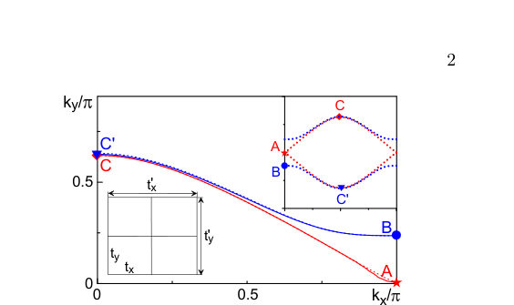
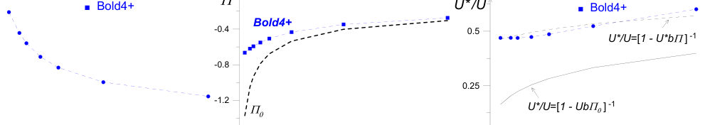
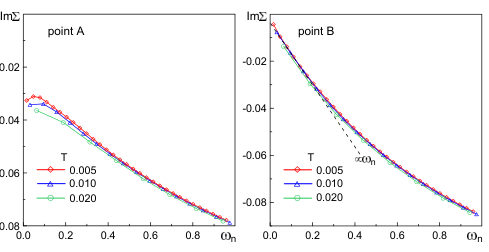
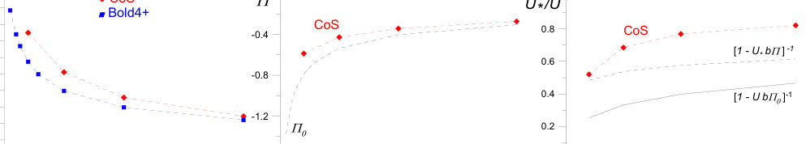
Summary. This paper explains why the predicted ferromagnetic instability at a Van Hove singularity does not occur in real 2D electron systems. Using advanced diagrammatic Monte Carlo methods, the authors show that the reduction in effective interaction strength and the loss of quasiparticle weight effectively suppress the magnetism. This provides a theoretical resolution to the conflict between mean-field predictions and experimental observations in materials like Sr2RuO4.
Why it may be interesting. not directly relevant
Main problem. The paper addresses the discrepancy between mean-field theory, which predicts a ferromagnetic (Stoner) instability at a Van Hove singularity, and experimental/numerical evidence showing that this instability is suppressed.
Main result. The researchers find that the Stoner instability is avoided down to temperatures an order of magnitude below the mean-field prediction due to a combination of downward renormalization of the effective coupling and the suppression of the density of states via loss of quasiparticle residue.
Method. The study employs two Diagrammatic Monte Carlo (DiagMC) approaches: the Bold4+ self-consistent approximation and the numerically exact method of Combinatorial Summation (CoS) of Feynman diagrams.
Model / system. An anisotropic 2D Fermi-Hubbard model on a square lattice with specifically chosen hopping amplitudes to create a flattened Fermi surface and a Van Hove singularity.
Key observables. Static magnetic susceptibility (chi), effective interaction (U*), polarization bubble (Pi), quasiparticle residue (Z), and fermionic self-energy (Sigma).
Important parameters / regimes. Interaction strength U = 2t, chemical potential tuned to the Van Hove singularity (mu = mu_VH), and temperature scales relative to the hopping parameter (T/t).
Assumptions / limitations. The study assumes the validity of the diagrammatic expansion and uses Padé/Integral approximants to extrapolate results from finite-order series.
Figures summary. Figure 2 shows susceptibility, polarization, and effective coupling using Bold4+; Figure 3 demonstrates the transition from Fermi-liquid to non-Fermi-liquid behavior in the self-energy; Figure 4 presents more controlled CoS results for susceptibility, polarization, and effective coupling.
Paper structure. The paper introduces the Stoner instability paradox, describes the 2D Hubbard model and the two DiagMC methods used, presents results from the Bold4+ approximation, provides more exact results from the CoS method, and concludes with the physical mechanisms of instability suppression.
When the Fermi surface and the Brillouin zone boundary touch at a Van Hove point, mean-field analysis predicts a ferromagnetic (Stoner) instability at finite $T_{MF}$ for any coupling strength due to the divergent density of states. However, the predicted effect has not been observed experimentally. Several qualitative theoretical proposals have been put forward to explain why the mean-field prediction fails. Based on numerically exact results for the two-dimensional Hubbard model with an ordinary Van Hove singularity, we uncover the mechanisms behind the suppression of the ferromagnetic instability. We employ two diagrammatic Monte Carlo approaches: (i) the four-channel self-consistent approximation and (ii) numerically exact method of combinatorial summation of diagrams with controlled resummation of the truncated expansion. We find that the system avoids the Stoner instability down to temperatures an order of magnitude below $T_{MF}$ due to the combination of the downward renormalization of the effective coupling and the suppression of the density of states by the loss of the quasiparticle residue.
Authors: Kushal Ramakrishna, Mani Lokamani, Attila Cangi
Type: both · Category: disordered systems and neural networks · PDF: https://arxiv.org/pdf/2605.28395v1
Analysis basis: full PDF text, analyzed in chunks
Summary. This paper demonstrates that training MACE machine-learning potentials on system-specific disordered structures (SQS) significantly improves the description of magnetism and elasticity in Fe-Ni alloys compared to general foundation models. However, it reveals that current models still struggle to capture complex high-pressure magnetic collapse and composition-dependent phase transitions.
Why it may be interesting. not directly relevant
Main problem. Evaluating the accuracy and transferability of MACE machine-learned interatomic potentials in describing magnetism, phase stability, and elastic properties in chemically disordered Fe-Ni alloys.
Main result. A system-specific MACE-sqs model outperforms general foundation models in capturing equilibrium volumes, elastic constants, and thermal expansion, though it fails to correctly predict the composition-dependent bcc-to-hcp transition pressure.
Method. The study uses spin-polarized PBE density functional theory (DFT) on Special Quasirandom Structures (SQS) to train a MACE potential, which is then benchmarked against experimental data and various MACE foundation models.
Model / system. The physical system consists of chemically disordered Fe-Ni alloys in bcc and fcc crystal structures, including Invar-like compositions, modeled using SQS to represent random atomic distributions.
Key observables. Energies, forces, equations of state, equilibrium volumes, elastic constants (C11, C12, C44), magnetic moments, and thermal expansion coefficients.
Important parameters / regimes. Ni concentration (%), pressure (GPa), temperature (K), and Warren-Cowley short-range order parameters.
Assumptions / limitations. The training uses PBE-level DFT without Hubbard U corrections; the models assume the ability to capture magnetoelastic effects through local chemical environments without explicit spin-disorder physics.
Figures summary. Fig 1 shows SRO parameters vs concentration; Fig 2 shows training data, magnetic moments, and energy/force parity plots; Fig 3 compares EOS curves; Fig 4 shows atomic volume vs Ni content; Fig 5 shows bcc-hcp transition pressure; Fig 6 compares elastic constants; Fig 7 shows temperature-dependent lattice parameters and thermal expansion.
Paper structure. The paper introduces the problem of MLIP accuracy in magnetic alloys, describes the SQS-based training methodology, presents a systematic benchmark of structural, elastic, and thermal properties, discusses the failure in phase stability transitions, and concludes with future directions for capturing magnetic collapse.
We present a systematic benchmark of MACE potentials for iron-nickel alloys, focusing on structural, elastic, magnetic, and finite-temperature properties relevant to phase stability. The reference dataset comprises spin-polarized PBE density functional theory (DFT) calculations for chemically disordered special quasirandom structures (SQS), spanning compositions, bcc and fcc crystal structures, and volumetric and shear deformations. A system-specific MACE-sqs model trained on this dataset achieves validation errors of 2.0 meV/atom for energies and 24.3 meV/Angstrom for forces. Compared with several MACE foundation models, including models trained with Hubbard U corrections, MACE-sqs gives the most consistent agreement with DFT and experiment for equations of state, equilibrium volumes, elastic constants, and thermal expansion trends in bcc and fcc Fe-Ni alloys. For the bcc-to-hcp transition, MACE-sqs predicts a pure-Fe transition pressure closer to experiment than the tested foundation models, but all models predict an incorrect increase of transition pressure with Ni content. This failure indicates that high-pressure magnetic collapse and composition-dependent magnetoelastic effects are not yet fully captured. Overall, targeted SQS-based training substantially improves the accuracy of MACE potentials for Fe-Ni alloys, while phase stability under magnetic collapse remains a key limitation for future model development.
Authors: Kaixin Tang, Zhao-Yang Dong, Yanyan Shangguan, Zhao Gong, Ye Yang, Song Bao, Houpu Li, Nan Zhang, Hongyu Li, Jian-Xin Li, Jinsheng Wen, Ziji Xiang, Xianhui Chen
Type: experiment · Category: strongly correlated electrons · PDF: https://arxiv.org/pdf/2605.28118v1
Analysis basis: full PDF text, analyzed in chunks
Summary. This paper demonstrates that the 1/3-magnetization plateau in the honeycomb magnet Na3Ni2BiO6 is not a single phase but a complex sequence of multiple quantum spin states. The discovery of a cascade of field-induced phases and anomalous low-temperature excitations highlights the profound impact of quantum fluctuations in frustrated lattices.
Why it may be interesting. not directly relevant
Main problem. The study aims to understand the complex magnetic phase diagram and the nature of field-induced quantum spin states in a highly frustrated honeycomb antiferromagnet, specifically investigating the substructure of the 1/3-magnetization plateau.
Main result. The researchers revealed that the 1/3-magnetization plateau in Na3Ni2BiO6 is composed of at least three distinct spin states and that a cascade of additional quantum phases exists between the plateau and magnetic saturation, accompanied by anomalous low-temperature specific heat upturns.
Method. The study employs a variety of experimental probes including AC magnetostriction via a magnetoelectric composite laminate, DC magnetization, magnetic torque magnetometry, and specific heat measurements down to 0.1 K, supplemented by DFT calculations.
Model / system. The physical system is Na3Ni2BiO6, a spin-1 (S=1) quasi-2D honeycomb antiferromagnet characterized by strong exchange frustration and potential Kitaev-like interactions.
Key observables. Magnetization (M), magnetostriction coefficient (alpha_x), magnetic torque (tau), specific heat (Cp), magnetic Grünevensen parameter (Gamma_H), and magnetic entropy (S).
Important parameters / regimes. Magnetic fields up to 14 T, temperatures down to 0.1 K, Neel temperature (TN approx 10 K), and critical fields (Hc1 through Hc5).
Assumptions / limitations. The phase diagram is assumed to be largely controlled by zero-temperature quantum fluctuations rather than thermal or entropic effects.
Figures summary. Figure 1 shows the experimental setup and magnetization/magnetostriction data; Figure 2 compares anomalies in different probes; Figure 3 displays specific heat evolution and power-law scaling; Figure 4 presents the comprehensive H-T phase diagram.
Paper structure. The paper introduces the material and problem, describes the experimental setup and magnetoelectric technique, presents magnetization and magnetostriction results revealing the plateau substructure, analyzes specific heat anomalies and scaling, constructs the H-T phase diagram, and concludes with theoretical implications.
Quantum fluctuations endow spin systems with surprisingly enriched magnetic phase diagrams. In frustrated magnets, strong quantum fluctuations boosted by either geometrical incompatibility or competitive exchange interactions stabilize cascades of unusual phases of matter. Here we reveal the presence of multiple quantum phases in the honeycomb antiferromagnet Na$_{3}$Ni$_{2}$BiO$_{6}$, both inside and beyond its field-induced one-third magnetization plateau. Comprehensive measurements of thermodynamic quantities demonstrate that the one-third plateau comprises at least three distinct spin states with nearly-degenerate net magnetization, separated by first-order transitions that likely involve sequential spin reconfiguration. Upon further increasing the magnetic field, the system evolves across a myriad of peculiar phases before reaching full polarization; these intermediate phases possess copious low-energy excitations, manifested by anomalous upturns of specific heat at ultralow temperatures -- probably hinting at the development of "hidden" ordered ground states. The complex magnetic phase diagram of Na$_{3}$Ni$_{2}$BiO$_{6}$ underlines the preponderant impact of quantum fluctuations on a honeycomb spin lattice with strong exchange frustration.
Authors: Astrid Eichhorn, Harald Mack, Kim Tuyen Le, Fabian Wagner
Type: theory · Category: disordered systems and neural networks · PDF: https://arxiv.org/pdf/2605.27514v1
Analysis basis: full PDF text, analyzed in chunks
Summary. This paper proposes a method to characterize the configuration space of causal sets using graph-theoretic observables rather than expensive continuum-geometry invariants. It demonstrates that simple structural properties like link degree and Laplacian eigenvalues can effectively differentiate between different spacetime-like and non-manifoldlike discrete structures.
Why it may be interesting. not directly relevant
Main problem. The goal is to map the vast configuration space of causal sets and identify efficient, label-invariant observables that can distinguish between manifoldlike and non-manifoldlike structures.
Main result. Three graph observables—link degree distribution, eigenvalues of the graph Laplacian, and the abundance of causal intervals—are found to be highly effective at distinguishing between nine different classes of causal sets.
Method. The authors use numerical simulations of various causal set classes (including Poisson sprinklings, lattices, and quasicrystals) and apply graph-theoretic analysis and statistical convergence tests.
Model / system. The study focuses on Causal Set Theory, investigating various discrete spacetime models including manifoldlike sets (with varying curvature and topology), non-manifoldlike sets (lattices, layered orders, and Kleitman-Rothschild orders), and Lorentzian quasicrystals.
Key observables. Link degree distribution, eigenvalues of the graph Laplacian of the symmetrized Hasse diagram, abundance of causal intervals (Alexandrov intervals), and height profiles.
Important parameters / regimes. Causal set size (n), spacetime dimensionality (d), boundary type (box vs. diamond), conformal factor (curvature), and topological parameters (genus, number of branches).
Assumptions / limitations. The study is primarily restricted to conformally flat manifolds (Weyl tensor = 0) and focuses on 2D and 3D dimensions.
Figures summary. Figures illustrate topological changes via cuts and handles, geometric parameters of lattices, and the sensitivity of various graph observables to dimensionality, size, and boundary conditions.
Paper structure. The paper defines various classes of causal sets, introduces a framework for generating them via Poisson sprinkling and other methods, presents a suite of graph-based observables, and evaluates their ability to distinguish between the constructed classes through statistical analysis.
The configuration space of causal sets is vast. It is a critical goal to map out this space. Here, we take a practical step towards this goal. We investigate nine classes of causal sets, most of them not studied before. These include manifoldlike causal sets with inhomogeneous Ricci curvature, both topologically trivial and nontrivial. We also study classes of non-manifoldlike causal sets, including lattices, layered orders as well as Lorentzian quasicrystals. Finally, we study classes of causal sets that are not manifoldlike, but are expected to become manifoldlike under a suitable coarse-graining process. We use this broad range of distinct classes of causal sets as a testbed for observables. Rather than focusing on continuum-geometry inspired observables, such as curvature invariants, which often exhibit large fluctuations and are computationally very expensive, we focus on graph observables, including some observables that constitute subgraph statistics and some that are global. We find that three observables, namely the link degree distribution, the eigenvalues of the graph Laplacian of the symmetrized Hasse diagram and the recently proposed abundance of causal intervals, can distinguish between the distinct classes of causal sets. This is made possible by the small fluctuations that these observables have in most classes.
Authors: Keita Matsubara, Kazumasa Hattori
Type: theory · Category: strongly correlated electrons · PDF: https://arxiv.org/pdf/2605.27812v1
Analysis basis: full PDF text, analyzed in chunks
Summary. This paper provides a symmetry-based framework to quantify how structural phase transitions generate chirality in crystals. It demonstrates that the emergence of electric toroidal multipoles and observable effects like chiral phonons can be predicted directly from the symmetry of the parent lattice and the displacement modes.
Why it may be interesting. not directly relevant
Main problem. The paper aims to quantify structural chirality during achiral-to-chiral (AtC) phase transitions and determine the functional relationship between structural order parameters and chirality-induced responses.
Main result. The authors establish a symmetry-based classification of AtC transitions, showing that the scaling of electric toroidal multipoles (monopoles and quadrupoles) is determined by the parent structure's symmetry and the character of the displacive mode.
Method. A group-theoretical approach combined with Landau theory is used to construct the electric toroidal multipoles as explicit functions of the displacement order parameter.
Model / system. The study focuses on crystalline solids undergoing structural phase transitions driven by atomic displacements, including specific cases like the rutile, diamond, and breathing pyrochlore lattices.
Key observables. Current-induced magnetization (CIM), chiral phonon splitting (CPS), and phonon angular momentum.
Important parameters / regimes. Displacement order parameter (eta), electric toroidal multipoles (G0 and Gu), and the ordering vector (Q).
Assumptions / limitations. The analysis primarily focuses on continuous phase transitions, though conclusions are noted to extend to discontinuous cases.
Figures summary. Figure 1 illustrates the achiral tetragonal phase and the resulting right-handed and left-handed displacement patterns in the chiral phase.
Paper structure. The paper introduces the concept of chirality via electric toroidal multipoles, develops a group-theoretical framework to relate these to structural order parameters, analyzes specific transition types (q=0 and q != 0), examines various lattice symmetries (rutile, diamond, pyrochlore), and concludes with the implications for phonon dynamics.
Chirality, defined by the absence of mirror and inversion symmetries, has attracted considerable attention owing to its unique physical phenomena, including cross-correlated responses such as current-induced magnetization (CIM) and chiral phonons. Recently, it has been established that chirality is characterized by electric toroidal (ET) multipoles: the ET monopole $G_0$ in cubic systems and the ET quadrupole $G_u$ in noncubic systems. In this paper, we investigate achiral-to-chiral (AtC) structural phase transitions driven by atomic displacements and construct $G_{0,u}$ as explicit functions of the displacement order parameter $η$ based on a group-theoretical approach. We show that the leading-order dependence of $G_{0,u}(η)$ is determined by the symmetry of the parent structure and the character of the displacive mode, providing a symmetry-based classification of AtC transitions beyond a binary distinction between achiral and chiral phases. We also demonstrate that $G_{0,u}(η)$ is directly reflected in observable quantities such as CIM and CPS, both of which scale consistently with $G_{0,u}(η)$. We further clarify the microscopic mechanism by which AtC transitions give rise to chiral phonons and chiral phonon splitting (CPS) through the coupling between $G_{0,u}(η)$ and phonon degrees of freedom.
Authors: Ju Hyeon Lee, Beom Hyun Kim, Bongjae Kim
Type: theory · Category: strongly correlated electrons · PDF: https://arxiv.org/pdf/2605.27979v1
Analysis basis: full PDF text, analyzed in chunks
Summary. This paper demonstrates that applying uniaxial strain in specific crystallographic directions can selectively induce unique, intertwined charge, orbital, and lattice orders in manganites. It shows that strain direction, rather than just magnitude, is a critical parameter for engineering new electronic and magnetic phases in correlated oxides.
Why it may be interesting. not directly relevant
Main problem. Investigating whether direction-selective uniaxial strain can act as a qualitative tuning knob to stabilize previously inaccessible, intertwined electronic and magnetic phases in hole-doped manganites.
Main result. Different strain directions stabilize qualitatively distinct phases, such as cooperative Jahn-Teller, breathing-like, and site-selective modulations, with diagonal strain (110) specifically stabilizing a new CF-type order.
Method. Density Functional Theory (DFT) calculations using the VASP package with the PBEsol functional and Hubbard U/Hund's J corrections.
Model / system. The prototypical Jahn-Teller system La0.75Ca0.25MnO3 (LCMO), modeled using an orthorhombic Pnma unit cell and an 8 formula unit supercell to capture structural and charge orders.
Key observables. Structural distortions (Jahn-Teller modes Q2, Q3 and breathing mode Q1), orbital polarization, charge disproportionation, and magnetic ground states (FM vs. A-type AFM).
Important parameters / regimes. Extreme uniaxial strain up to ~8-10% along (100), (010), (110), and (1-10) directions; Hubbard U = 4 eV; Hund's coupling J_H = 1 eV.
Assumptions / limitations. The study assumes the validity of the DFT+U approach for treating Mn-3d electron correlations and focuses on the extreme strain regime enabled by free-standing layer techniques.
Figures summary. Fig 1 shows the phase diagram of LCMO vs doping; Fig 2 illustrates the lattice structure and schematic phase diagrams for different strain directions; Fig 3 displays the strain dependence of JT and breathing modes and octahedral rotation/tilting angles.
Paper structure. The paper introduces the problem of strain engineering, describes the DFT methodology, presents results for different strain directions (uniaxial vs biaxial), analyzes the driving mechanism of phase transitions, and provides supplementary structural and energy data.
The complex interplay of charge, spin, orbital, and lattice degrees of freedom governs emergent phases in quantum materials, making strain a powerful control parameter. Recent advances in free-standing layer techniques have enabled extreme strains of nearly 8%, opening access to novel and often unexpected electronic and magnetic phases. Here, using a density functional theory approach, we investigate the effect of direction-selective uniaxial strain on the prototypical Jahn-Teller system La1-xCaxMnO3 (x = 0.25). We find that different strain directions stabilize qualitatively distinct structural, charge, and orbital responses, rather than merely different strengths of the same phase. In particular, extreme uniaxial strain selectively induces cooperative Jahn-Teller, breathing-like, and site-selective modulations, thereby enabling previously inaccessible intertwined orders in manganites. These results establish direction-selective uniaxial strain as a powerful and selective route for engineering emergent phases in quantum materials.
Authors: Ewan Mer, Zhenghao Li, Shang Yu, Ian A. Walmsley, Raj B. Patel
Type: both · Category: quantum information and computing · PDF: https://arxiv.org/pdf/2605.27522v1
Analysis basis: full PDF text, analyzed in chunks
Summary. The paper proposes Displaced Gaussian Boson Sampling (D-GBS) as a way to improve the efficiency of finding maximum cliques in graphs. By adding coherent state displacements to the GBS process, the researchers show that the success rate can be significantly boosted even in the presence of high photon loss or low squeezing. This method scales effectively to larger graphs with minimal additional resource overhead.
Why it may be interesting. This is highly relevant to quantum optics and open quantum systems as it demonstrates how a specific type of non-classical resource (displacement) can be used to mitigate the detrimental effects of photon loss and limited squeezing in a computational task.
Main problem. Enhancing the success rate of Gaussian Boson Sampling (GBS) for finding maximum-weighted cliques in undirected graphs, specifically overcoming performance degradation caused by photon loss and limited squeezing.
Main result. The introduction of Displaced Gaussian Boson Sampling (D-GBS) boosts the sampling probability of maximum-weighted cliques under high loss or low squeezing, providing a scalable enhancement with low resource overhead.
Method. The authors use numerical simulations (Strawberry Fields) to compare D-GBS against GBS and classical algorithms, employing a classical post-processing routine of greedy-shrinking and local search on photon click patterns.
Model / system. A photonic hardware platform utilizing Gaussian Boson Sampling (GBS) and its extension, Displaced Gaussian Boson Sampling (D-GBS), which incorporates single-mode squeezed vacuum states, a Haar-random linear optical network, and coherent state displacements.
Key observables. Photon number vectors, photon click patterns, and the success rate of identifying the maximum clique.
Important parameters / regimes. Squeezing parameters (r), displacement vectors (gamma), photon loss (eta), and the collision-free regime (M >> N^2).
Assumptions / limitations. Assumes Haar-random unitaries, the anti-concentration property, and the collision-free regime; requires displacement to be a monotonic increasing function of node weight to avoid bias.
Figures summary. Figure 1 shows the D-GBS workflow; Figure 2 shows max-clique probability vs. gamma and squeezing; Figure 3 shows improvement across graph sizes; Figure 4 compares success rates against classical samplers; Figure 5 shows loss resilience; Figure 6 shows the effectiveness of local search; Figure 7 shows scaling of enhancement and resource ratios; Figure 8 shows probability distribution histograms.
Paper structure. The paper introduces the problem of max-clique search in GBS, defines the D-GBS mathematical framework (loop hafnian), presents numerical results demonstrating enhancement under loss and low squeezing, analyzes scalability and complexity, and concludes with a comparison of resource overheads.
Gaussian Boson Sampling (GBS) is capable of solving certain classes of graph problems owing to the samples produced by such a device having a connection to the hafnian matrix function. In particular, a GBS device has been shown to provide an enhancement in the search of cliques -- or complete subgraphs -- in undirected weighted graphs over classical algorithms. A graph can be mapped to a GBS experiment by configuring the squeezing parameters of the input states and programming the linear optical network. In practice, limited squeezing and photon loss degrade the performance of the GBS device for max-clique search. In comparison, coherent states -- often considered a classical resource due to their Poissonian statistics -- can be readily prepared across many modes using an attenuated laser. In this paper, we report an enhancement of the success rate of GBS in finding maximum weighted cliques by adding displacements under lossy conditions or when a limited amount of squeezing is available. Moreover, we report that this enhancement can be scaled up to large graphs with limited resource overheads.
Authors: Sudip Vhaduri, Ryan Gammon, Sayanton Dibbo
Type: experiment · Category: quantum information and computing · PDF: https://arxiv.org/pdf/2605.27923v1
Analysis basis: full PDF text, analyzed in chunks
Summary. This paper provides a comprehensive benchmark of quantum versus classical machine learning models for image recognition. It finds that while quantum models can be computationally expensive, they offer significant advantages in parameter and memory efficiency, particularly in high-dimensional data regimes.
Why it may be interesting. not directly relevant
Main problem. Evaluating the practical utility and necessity of Quantum Machine Learning (QML) for computer vision tasks by identifying specific regimes where quantum models provide a tangible advantage over classical models.
Main result. Quantum models show greater relative accuracy advantages as feature dimensionality or sample size increases; specifically, QCNNs achieve comparable accuracy to CCNNs but with ~94% fewer parameters and ~75% less memory.
Method. A multidimensional benchmarking study comparing CSVM, QSVM, CCNN, and QCNN using the MNIST dataset, evaluating performance across varying feature counts, sample sizes, and CPU/GPU environments.
Model / system. The study uses simulated quantum hardware via the PennyLane library, implementing Quantum Support Vector Machines (QSVM) with angle embedding and Quantum Convolutional Neural Networks (QCNN) using variational quantum circuits with RX, RY, and CNOT gates.
Key observables. Classification accuracy, computational runtime, parameter count, and memory requirements.
Important parameters / regimes. Feature dimensionality (qubit count), sample size, and execution environment (CPU vs. GPU).
Assumptions / limitations. The study is limited to the MNIST dataset and relies on quantum simulations rather than real hardware; it assumes PCA components equal the number of qubits for encoding.
Figures summary. Bar graphs and dual-axis plots showing accuracy and runtime variations for SVMs across qubit/feature counts and sample sizes, and performance metrics (accuracy, runtime, parameters, memory) for CNNs across varying feature counts and sample sizes.
Paper structure. The paper introduces the motivation of QML in computer vision, details the experimental setup and models (SVM and CNN variants), presents a multidimensional comparative analysis of accuracy and efficiency, and concludes with potential applications in edge computing and limitations of the study.
The rapid growth of computer vision and increasingly complex image recognition tasks has exposed fundamental computational limitations of classical machine learning models, motivating the exploration of quantum computing as an emerging new paradigm. This paper presents a comprehensive benchmarking study of classical and quantum machine learning models for image recognition on the MNIST handwritten digit dataset, evaluating both traditional models, a Classical Support Vector Machine (CSVM) and a Quantum Support Vector Machine (QSVM), and deep neural network models, a Classical Convolutional Neural Network (CCNN) and a Quantum Convolutional Neural Network (QCNN), across four performance dimensions: classification accuracy, computational runtime, parameter count, and memory requirements. Experiments are conducted as functions of both feature dimensionality and sample size, and across CPU and GPU execution environments, providing a controlled, multidimensional comparison to address gaps in prior work. For the SVM-based models, QSVM consistently outperforms CSVM in accuracy, reaching $\sim$ 0.90 versus $\sim$ 0.85 at 1,000 samples, with a higher computational cost. A feature count of 10 qubits and a sample size in the range of 200 -- 500 emerge as practical operating points that balance accuracy and runtime. For the neural network models, CCNN and QCNN achieve comparable classification accuracy, both exceeding 0.96 at 64 features and 60,000 samples, yet QCNN offers substantially superior parameter and memory efficiency, requiring $\sim$ 94\% fewer parameters and $\sim$ 75\% less memory than CCNN at higher feature counts, while incurring higher runtime. Across both model families, quantum models consistently outperform classical models by greater margins in accuracy as feature dimensionality or sample size increases.
Authors: Quang-Phong Tran, Claudio Cicconetti, Marco Conti, Andrea Passarella
Type: theory · Category: quantum information and computing · PDF: https://arxiv.org/pdf/2605.28795v1
Analysis basis: full PDF text, analyzed in chunks
Summary. This paper proposes a dynamic scheduling algorithm for quantum networks to replace inefficient static schedules. By reacting to real-time successes and failures of entanglement generation, the scheduler improves network throughput and reliability. It is particularly effective at managing resource contention in high-load scenarios.
Why it may be interesting. not directly relevant
Main problem. Efficiently sharing entanglement among multiple users in scalable quantum networks is difficult due to stochastic entanglement generation outcomes and asynchronous request arrivals, which cause static TDMA schedules to fail.
Main result. The proposed dynamic online scheduler achieves higher throughput, lower completion time, and a higher completion ratio than static EDF-based baselines, while demonstrating graceful degradation under network overload.
Method. The authors develop an online, event-driven scheduler that manages two priority queues (Event and Ready) to dynamically decide whether to admit, defer, retry, or drop entanglement distribution reservations based on real-time outcomes.
Model / system. A time-slotted quantum network model using an undirected graph where nodes perform entanglement generation and swapping. The architecture uses an on-demand 'entanglement packet' approach with Packet Generation Attempts (PGAs) across paths.
Key observables. Completion ratio, throughput, makespan, admission rate, link utilization, and waiting time.
Important parameters / regimes. Target success probability (p_packet), link generation probability (p_gen), Bell State Measurement success probability (p_bsm), application period (T_a), and path length (number of hops).
Assumptions / limitations. Entanglement generation is triggered only upon request; no multipartite entanglement is considered; routing is fixed to the shortest path; and the model assumes instantaneous entanglement swapping and simplified quantum memory.
Figures summary. Figure 1 shows a 5-node network topology; Figure 2 provides a toy example comparing static vs. dynamic scheduling success/failure; Figure 3 shows static admission rate vs. load; Figure 4 compares performance metrics (completion ratio, makespan, etc.) between the two schedulers; and a final figure shows the impact of path length on packet drops and retries.
Paper structure. The paper introduces the entanglement packet architecture, defines the mathematical network and application models, presents the proposed dynamic scheduling algorithm, describes the simulation setup using the GARR network, and concludes with a performance comparison and discussion of future work.
Sharing entanglement among multiple users remains a central challenge for scalable quantum networks. Recent work proposed an on-demand entanglement packet architecture in which a controller uses a Time Division Multiple Access (TDMA) approach to allocate network resources. Quantum nodes are assigned a periodic schedule that probabilistically fulfills application requests for end-to-end entanglements. The schedule is recomputed periodically using well-known algorithms, such as Earliest Deadline First (EDF). However, a static schedule offers limited flexibility when outcomes are stochastic and arrivals are asynchronous. To overcome this limitation, we propose an online scheduler that dynamically schedules, defers, retries, or drops entanglement distribution reservations. In our simulations, the dynamic scheduler achieves lower completion time, higher completion ratio, and higher throughput than the static baseline. Furthermore, when the network is overloaded, the dynamic scheduler continues to construct deadline-feasible schedules and degrades gracefully.
← Index · ← Previous · Next →